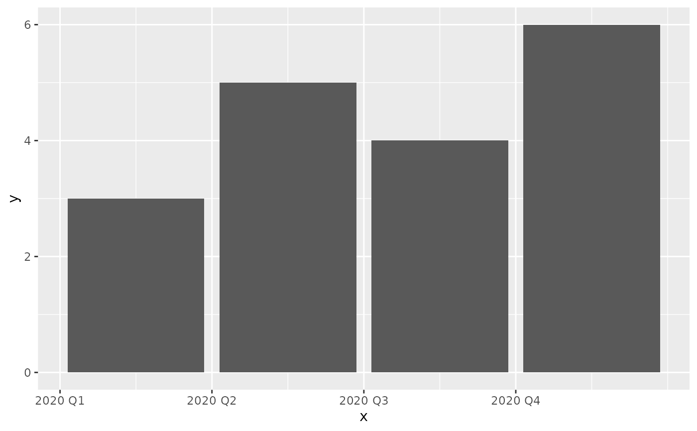

A discrete time point is a granule rather than an instant: 2020 Jan names
the whole of January, not one moment within it. guide_axis_mixtime() draws
the axis accordingly, placing ticks where each granule starts and ends and
the label naming it between them. This gives discrete time the same
appearance that ggplot2::guide_axis() gives a discrete scale, where a label
names a band of the axis rather than a position along it.
A character string or expression indicating a title of guide.
If NULL, the title is not shown. By default
(waiver()), the name of the scale object or the name
specified in labs() is used for the title.
A theme object to style the guide individually or
differently from the plot's theme settings. The theme argument in the
guide partially overrides, and is combined with, the plot's theme.
silently remove overlapping labels, (recursively) prioritizing the first, last, and middle labels.
Compared to setting the angle in theme() / element_text(),
this also uses some heuristics to automatically pick the hjust and vjust that
you probably want. Can be one of the following:
NULL to take the angles and hjust/vjust directly from the theme.
waiver() to allow reasonable defaults in special cases.
A number representing the text angle in degrees.
The number of rows (for vertical axes) or columns (for horizontal axes) that should be used to render the labels. This is useful for displaying labels that would otherwise overlap.
Whether to draw the minor ticks (TRUE) or not draw
minor ticks (FALSE, default).
A character to cut the axis line back to the last breaks. Can
be "none" (default) to draw the axis line along the whole panel, or
"upper" and "lower" to draw the axis to the upper or lower break, or
"both" to only draw the line in between the most extreme breaks. TRUE
and FALSE are shorthand for "both" and "none" respectively.
A positive integer of length 1 that specifies the order of
this guide among multiple guides. This controls in which order guides are
merged if there are multiple guides for the same position. If 0 (default),
the order is determined by a secret algorithm.
Where this guide should be drawn: one of top, bottom, left, or right.
A <Guide> object, suitable for the guide argument of
scale_x_mixtime() or ggplot2::guides().
This is the default guide for scale_x_mixtime(), and applies only when the
data occupies whole granules. Continuous time points sit at an instant and
have no granule to bracket, so the guide then behaves exactly like
ggplot2::guide_axis().
Every granule in the panel has its boundaries ticked, whether or not it is labelled, so labels which skip granules (such as every 6 months) still show the width of what they name. Where this would be too many ticks to tell apart, only granules of a coarser unit, or those with labels, are ticked.
The default breaks are labelled by the coarsest granule which simplifies them, so 10 years of monthly data has years labelled (and ticked) rather than months.
Angular axes of ggplot2::coord_radial() are drawn as by
ggplot2::guide_axis_theta(), with a tick at each break.
library(ggplot2)
df <- data.frame(y = c(3, 5, 4, 6))
df$x <- mixtime::yearquarter(200:203)
# Each quarter is bracketed by ticks, with its label in between
ggplot(df, aes(x, y)) +
geom_col() +
scale_x_mixtime(breaks = mixtime::yearquarter(200:203))
# Ticks at the break points instead, as a non-temporal axis would draw them
ggplot(df, aes(x, y)) +
geom_col() +
scale_x_mixtime(
breaks = mixtime::yearquarter(200:203),
guide = guide_axis()
)
